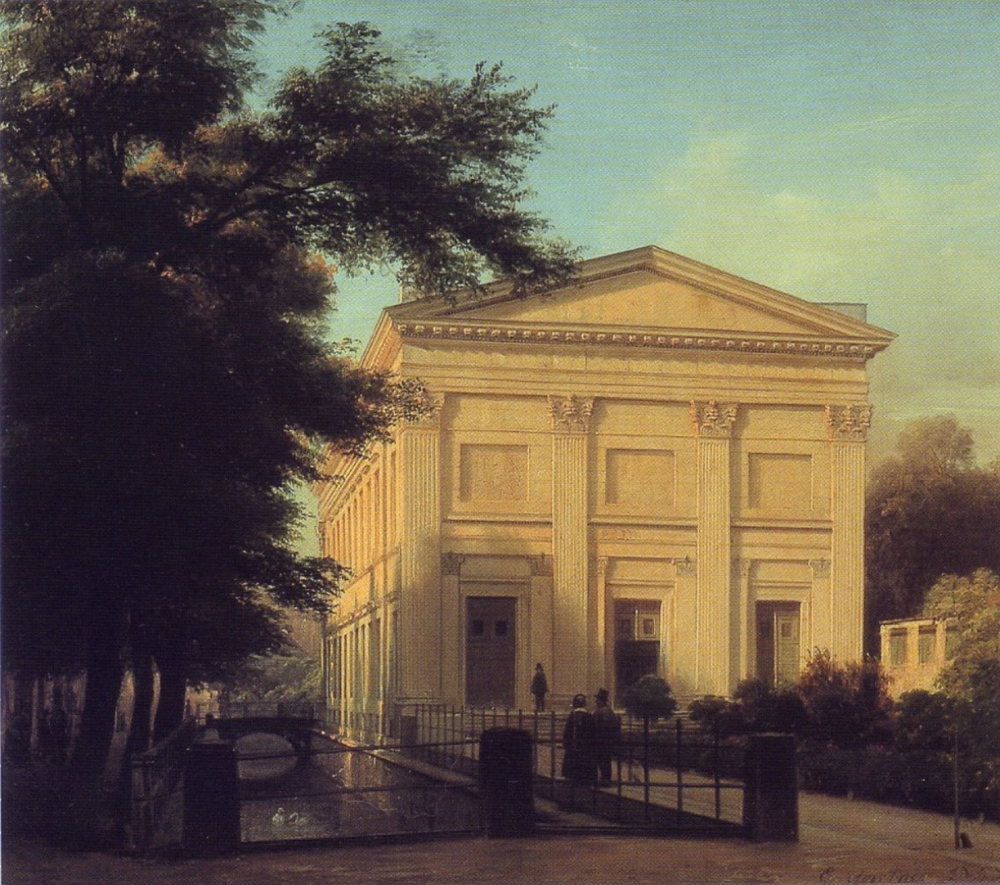

11 March 1829: the St. Matthew Passion returns

The Singakademie's hall sold out days in advance; on the evening of 11 March 1829, by the accounts, a thousand more were turned away while Berlin's whole intellectual firmament — Hegel, Schleiermacher, Heine, Rahel Varnhagen, the Prussian court — packed in to hear a work almost none of them had ever heard a note of: the St. Matthew Passion, silent since its composer's Leipzig, conducted from memory by a twenty-year-old in his public debut as a choral conductor, with Devrient as Jesus and some three hundred singers.
Be precise about what was performed, because the timeline's honesty policy applies to resurrections too: roughly half the work — ten arias and much else cut, recitatives trimmed, clarinets covering the extinct oboes d'amore, dynamics romanticized. A period document, not a restoration. It did not matter. The audience wept openly; the press declared an epoch; two repeat performances followed within weeks (21 March — Bach's birthday — and, under Zelter, Good Friday); and the event detonated outward: Frankfurt, Breslau, Dresden, Königsberg mounted their own Passions within seasons. Applegate's verdict is the accepted one: the performance fused art-religion, Protestant renewal, and German cultural nationalism into the founding event of the historical-performance canon itself — the moment Western concert life decided its center of gravity lay in the past.
For the two figures at the center, the ironies were lived, not literary. Mendelssohn — grandson of Moses Mendelssohn, baptized Lutheran, permanently double-positioned — made the joke the previous card records, then spent his remaining eighteen years as the revival's engine (Leipzig, Gewandhaus, the organ recitals, the first Bach monument — which he paid to erect near the Thomaskirche). Old Zelter, who had guarded the manuscripts and doubted the world was ready, lived to see his caution refuted in his own hall.
Why it matters. The hinge of the entire timeline: Arc I's summit work, preserved through Arc II's silence by inheritance, salon, and gift, returns as the founding monument of Arc III's living tradition. Every Bach performance you will ever attend descends from this room.
Devrient's memoirs; contemporary Berlin press
Applegate, Bach in Berlin (the standard study)
→ full bibliography & links